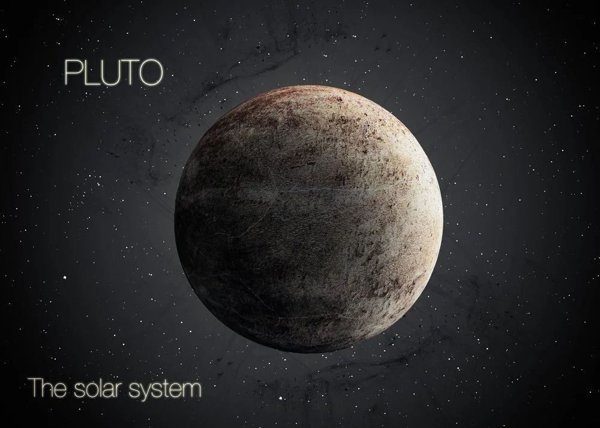
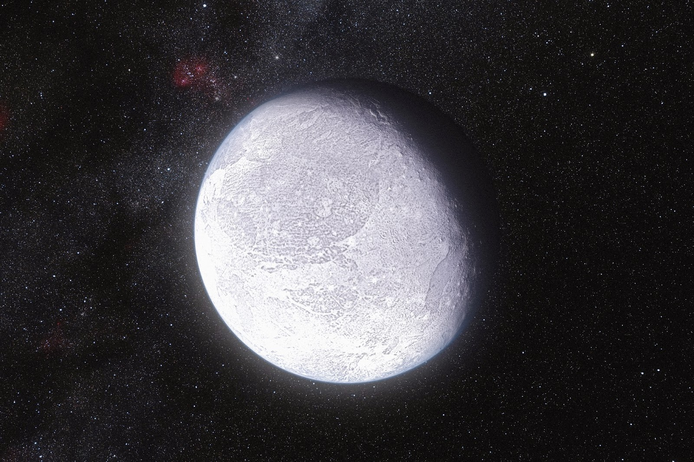
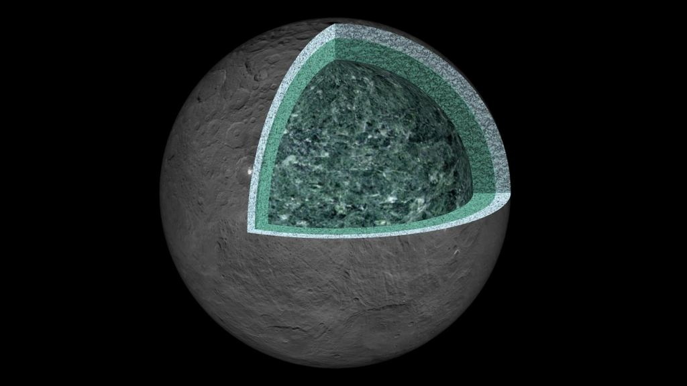
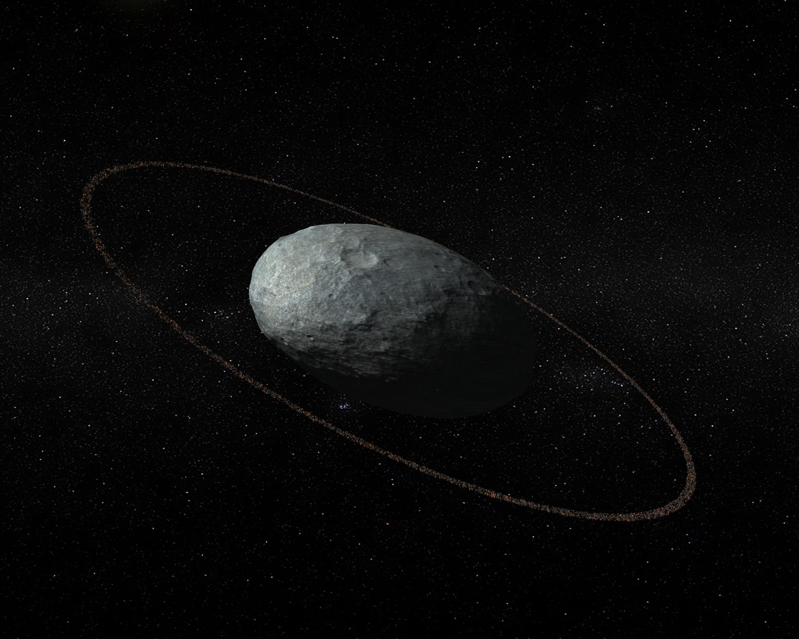

| Planet name |
Planet picture |
Information |
| pluto
| 
| Pluto is a drawf planet and is very cold The sun takes 5 hours to reach pluto Pluto is made of corbon monoxide in ice forms. Pluto takes 248 earth years to complete a year
|
| Eris
| 
| Eris is a dwarf planet located after pluto Temps can reach as -500 degress. A year on Eris is 558 earth years long
|
| Ceres
| 
| Ceres is a dwarf planet located near the astroid belt Ceres temps can reach -159 degress, we can not live there A year on Ceres is 4.6 earth years
|
| Haumea
| 
| Haumea is near the kuiper belt
Also near the kupier belt and is cold it has rings like saturn It takes haumea 286 earth years to orbit the sun
|
| Makemake
|
| This planet is very cold, -406 degress fahrenheits It takes 305 earth years for make make to complete a year This is the nearest planet to the kupier belt, before eris
|